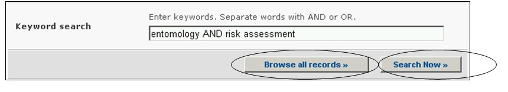

Ссылка: http://bch.cbd.int/database/experts/
Реестр экспертов был создан в соответствии с решением первого внеочередного совещания Конференции сторон Конвенции о биологическом разнообразии одновременно с принятием Протокола по биобезопасности (см. Решение EM-I/3). Его цель заключается в предоставлении по соответствующей просьбе Сторон, являющихся развивающимися странами и странами с переходной экономикой, консультаций и иного содействия при проведении оценки рисков, принятии обоснованных решений, развитии национальных людских ресурсов и укреплении организационной инфраструктуры, связанной с трансграничными перемещениями ЖИО.
Конференция Сторон Конвенции о биологическом разнообразии, выступающая в качестве совещания Сторон Картахенского протокола по биобезопасности,– руководящий орган Протокола – постановила, что МПБ будет поддерживать и предоставлять доступ к реестру экспертов, который будет также содержать формы для включения кандидатур в реестр, для того чтобы Стороны могли предлагать кандидатуры своих экспертов. С отчетами об использовании базы данных Реестра экспертов и добровольного фонда поддержки можно ознакомиться на странице Отчетность раздела Протокол. Возможность получения этих отчетов рассматривается в Модуле 03.
Поиск информации в Реестре экспертов можно осуществлять, используя соответствующие ссылки в выпадающем меню раздела навигационной панели Finding Information (Поиск информации), или в меню в левой части страницы Поиск информации, или используя ссылку Реестр экспертов в тексте страницы. Эти ссылки выводят на страницу Поиск в Реестре экспертов, на которой возможно осуществлять поиск экспертов по биобезопасности, назначенных правительствами.

Рисунок 57

Рисунок 58
На странице Поиска в Реестре экспертов предусмотрены пять полей с критериями уточнения поиска. Каждое из полей содержит выпадающее меню, позволяющее выбрать необходимый критерий. По умолчанию (если критерий не выбран) используется первый пункт меню. Справа от полей выбора критериев расположены кнопки, позволяющие перейти в режим выбора нескольких критериев. В этом режиме возможно добавление критериев поиска, путем выбора необходимых критериев при удерживании нажатой кнопки Ctrl (Control) на клавиатуре.
В выпадающем меню поля 1 [Выберите страну] приведен список всех стран, позволяющий выбрать для поиска одну или несколько необходимых стран.

Рисунок 59
В меню поля 2 [Выберите группу стран] приведен список групп стран, позволяющий выбрать для поиска одну или несколько необходимых групп. Список групп стран содержит все основные географические и политические группы, что позволяет осуществлять поиск сведений, предоставленных конкретной группой или группами стран.

Рисунок 60
Меню поля 3 [Эксперт] позволяет применить фильтры к имени эксперта, его гражданству и к стране назначения, что позволяет сузить круг поиска до решений, отвечающим выбранным критериям поиска.
Выбор одного или нескольких фильтров в выпадающем меню открывает соответствующие дополнительные поля, которые содержат свои выпадающие меню с вариантами, связанными с выбранными фильтрами. Выбрать несколько вариантов фильтра можно, использую клавишу Ctrl (Control), т.е. путем выбора необходимых вариантов в меню при удерживании нажатой кнопки Ctrl (Control) на клавиатуре

Рисунок 61
Меню поля 4 [Дата предоставления сведений] позволяет сузить круг поиска сведений в соответствии с датой их предоставления МПБ. Выпадающее меню содержит ряд временных периодов для оптимизации поиска сведений, предоставленных за определенное время (например, за последний день, за последний месяц, за последний год и т.д.).

Рисунок 62
Поле 5 [Ключевые слова] предоставляет возможность использования ключевых слов для сужения круга поиска. Пользователь может использовать стандартный синтаксис (AND/OR) для комбинации ключевых слов или корневых частей слов (например, «Import OR Export», «координ* AND центр»). В результате поиска с использованием ключевых слов будут представлены только сведения, содержащие конкретные ключевые слова, но не их синонимы (например, в результате поиска с использованием ключевого слова «Maize» будут представлены сведения, содержащие только это слово, и не представлены, содержащие его синонимы «Corn» и «Zea mays»)

Рисунок 63
На странице поиска расположены три кнопки, инициирующие процедуру поиска. Кнопки Search Now (Искать), расположенные вверху и внизу формы поиска, позволяют осуществить поиск, используя выбранные критерии в полях функции поиска. Результаты поиска будут расположены в алфавитном порядке по названию страны (по умолчанию). Кнопка Browse all records (Просмотреть все записи) дает возможность просмотреть все сведения этой базы данных.

Рисунок 64
Страницы Результатов поиска имеют функцию сортировки, расположенную вверху страницы, которая может быть использована для сортировки результатов в соответствии с параметрами, имеющими отношение к данной категории информации. Необходимо отметить, что параметры сортировки результатов изменяются в зависимости от критериев поиска.

Рисунок 65
Пример. Предположим, что необходимо найти экспертов в Европе, которые имеют опыт работы в области лесного хозяйства и оценки риска. В этом случае необходимо выбрать Евразия – Европа (все страны) в поле Географические зоны, группы стран и ввести лесное хозяйство AND оценка риска (forestry AND risk assessment) в поле Ключевые слова.
После нажатия кнопки Search Now (Искать) будут представлены результаты поиска в виде списка кратких сведений. Подробную информацию о каждом эксперте можно просмотреть, используя ссылку в имени эксперта.

Рисунок 66

Рисунок 67